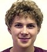

Updates- September 1, 2016
We welcome Navid Rashedi, a first year PhD student, to the group. - June 14, 2016
Second year graduate student, Reed Harder, made a presentation titled "Two-Stage Game Theoretic Modelling of Airline Frequency and Fare Competition" at The 11th Workshop on the Economics of Networks, Systems and Computation (NetEcon 2016) in Juan-les-Pins, France. - March 31, 2016
Our paper titled "Modeling Probability Distributions of Primary Delays in the National Air Transportation System" co-authored by Shitong Wang and Vikrant Vaze was accepted for publication in the journal Transportation Research Record. - November 17, 2015
Our paper titled "Tarmac Delay Policies: A Passenger-Centric Analysis" co-authored by Chiwei Yan, Vikrant Vaze, Sunny Vanderboll, and Cynthia Barnhart was accepted for publication in the journal Transportation Research Part A: Policy and Practice. - November 2, 2015
Congratulations to Chiwei Yan for winning the INFORMS Aviation Applications Section's Best Student Presentation Competition. Chiwei is a PhD student at MIT and is co-advised by Prof. Vikrant Vaze. - November 2, 2015
Congratulations to Dr. Alexandre Jacquillat for winning the prestigious George B. Dantzig Dissertation Award as well as the INFORMS Transportation Science and Logistics society's best PhD dissertation award. Prof. Vaze served as a dissertation committee member and a dissertation chapter co-author. - November 1, 2015
Second year graduate student, Keji Wei, made a presentation titled "Quantifying Delay Propagation Through Crew Connections" at the INFORMS Annual Meeting in Philadelphia, PA. - September 15, 2015
Two chapters co-authored by Prof. Vaze were published in the book The Global Airline Industry, 2nd Edition by Wiley. - October 27, 2015
Our paper titled "Modeling Probability Distributions of Primary Delays in the National Air Transportation System" co-authored by Shitong Wang and Vikrant Vaze was accepted for publication in the journal Transportation Research Record. - February 14, 2015
Our paper titled "Integrated Airline Scheduling: Considering Competition Effects and the Entry of the High Speed Rail" co-authored by Luis Cadarso, Vikrant Vaze, Cynthia Barnhart, and �ngel Mar�n was accepted for publication in the journal Transportation Science. - January 1, 2015
We welcome Reed Harder, a first year PhD student, to the group. - January 1, 2015
We welcome Shitong Wang, from the Tianjin Chengjian University (Tianjin, China), to the group. Shitong will be with us until July 31st 2015 as a Visiting Researcher. - December 20, 2014
We welcome Prof. Xuemei Li, from the Beijing Jiaotong University (Beijing, China), to the group. Prof. Li will be with us until August 30th 2015 as a Visiting Research Professor. - September 1, 2014
We welcome Keji Wei, a first year PhD student, to the group.
| PeopleVikrant Vaze
Assistant Professor Keji Wei
Graduate Student Reed Harder
Graduate Student |